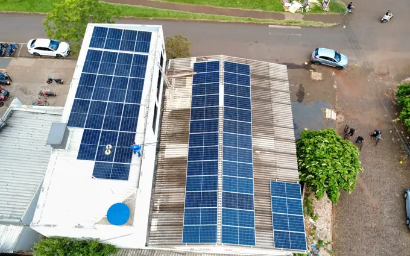
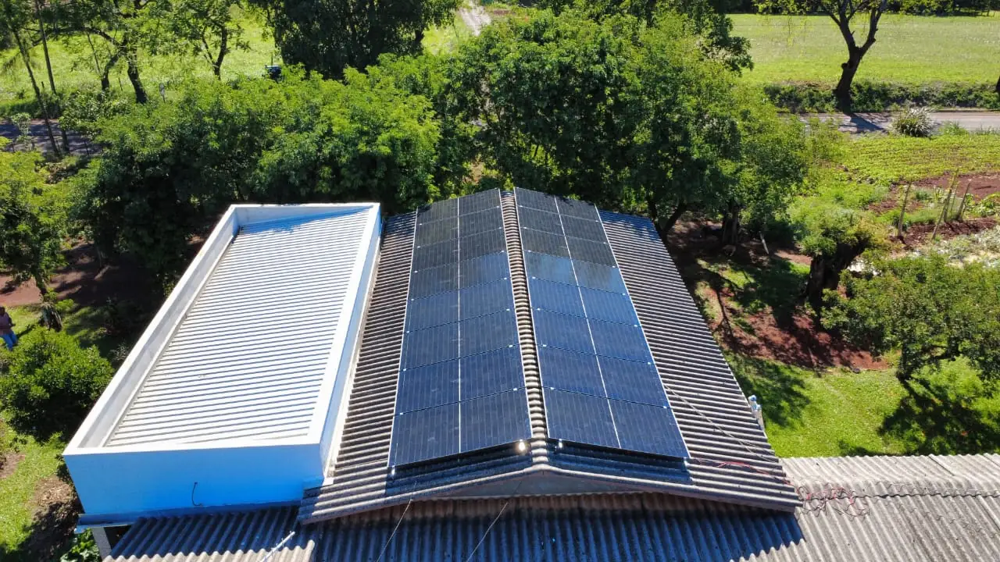
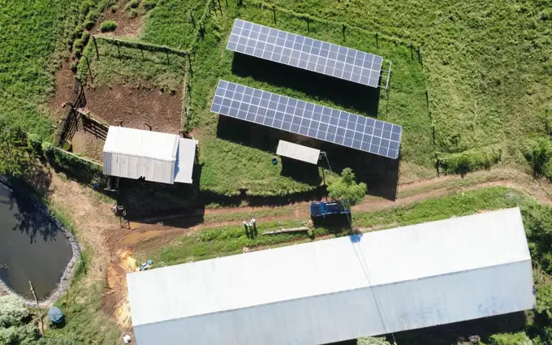
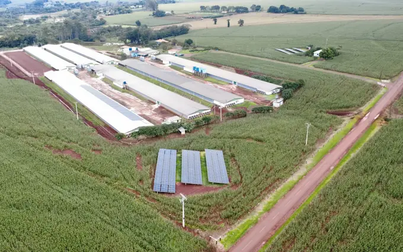

Comércio e varejo
Lojas, mercados e supermercados que operam no horário de sol. O excedente vira crédito para o restante do dia.

Projeto elétrico assinado, instalação com equipe própria e homologação completa junto à Copel. Para comércio, indústria e serviços, energia é custo fixo — e reduzir custo fixo aumenta a margem em todos os meses do ano.
Resposta em poucos minutos no horário comercialA M&A Soluções Energéticas trata projeto de energia solar empresarial como o que ele realmente é: uma decisão financeira. Em Toledo, onde o comércio, os serviços e a agroindústria sustentam a economia local, a conta de energia costuma ser um dos maiores custos fixos — e é justamente o único que dá para reduzir de forma permanente, sem cortar atendimento, estoque ou equipe.
O ponto de partida é sempre o seu histórico real de consumo e o seu enquadramento tarifário junto à Copel. Empresas no Grupo A (alta tensão) e no Grupo B (baixa tensão) têm regras diferentes de demanda contratada, fator de potência e impostos — e cada um desses fatores muda o projeto e o retorno. É por isso que não existe "sistema padrão de empresa": existe o sistema dimensionado para a operação específica do seu negócio.
Analisamos também o perfil de consumo ao longo do dia. Comércio e indústria que operam no horário de sol são os casos mais favoráveis, porque a geração acontece exatamente quando o consumo está no pico. O excedente gerado vira crédito de energia que a Copel compensa nos períodos de menor produção.
Na execução, mantemos o mesmo rigor técnico dos projetos residenciais: equipe própria, NR-10 e NR-35 em dia, ART registrada no CREA e proteções conforme a NBR 16690. Para o empresário, isso se traduz em uma obra que não interrompe a operação e em um sistema que não deixa o negócio na mão no futuro.
Envie a sua fatura de energia. Devolvemos o cálculo de economia, o investimento estimado e o tempo de retorno do projeto.
Enviar minha fatura
Toledo é um dos principais polos econômicos do Oeste do Paraná, com forte presença de frigoríficos, laticínios, cooperativas, varejo e uma cadeia de serviços que cresce a cada ano. Quanto maior a operação, maior o peso da energia elétrica no custo total — e mais agressivo o impacto de cada reajuste tarifário da Copel no resultado do negócio.
Somando os últimos dez anos, a tarifa de energia no Paraná mais que dobrou. Bandeiras tarifárias, encargos setoriais e custos de transmissão empurram o valor para cima todos os anos, e nenhum desses fatores está sob controle do empresário. Para quem opera com margem apertada — caso típico do varejo de alimentos e do pequeno comércio —, um aumento de 10% na energia pode significar a diferença entre lucro e prejuízo no mês.
A energia solar inverte essa lógica. Em vez de uma despesa crescente e vitalícia, você faz um investimento único, com prazo definido de retorno. Nos projetos empresariais da região, o payback costuma ficar entre três e quatro anos — mais rápido que no residencial, porque o consumo empresarial tende a ser maior e concentrado no horário de sol. Depois que o sistema se paga, todo o restante da vida útil dos módulos vira redução direta de custo.
Há ainda o efeito tributário, que muita gente não considera. Empresas podem aproveitar benefícios fiscais e linhas de crédito específicas para projetos de eficiência energética e geração distribuída. E, no caso de quem está no Simples Nacional ou no lucro presumido, a redução do custo de energia melhora diretamente o caixa e a competitividade frente a concorrentes que ainda dependem 100% da rede.
Para a indústria, o raciocínio é ainda mais direto: energia é insumo. Reduzir o custo do insumo aumenta a margem em todos os meses do ano, inclusive nos de faturamento fraco, quando a conta fixa pesa mais. É uma proteção que nenhum reajuste tarifário consegue tirar.
Vale registrar que Toledo tem irradiação solar média entre 4,9 e 5,2 kWh/m² por dia, índice superior ao de países europeus que lideram o uso da tecnologia. Ou seja: o mesmo sistema instalado aqui produz mais energia por real investido do que em grande parte do mundo.
Comércio, serviços, indústria e agronegócio têm perfis de consumo diferentes. O dimensionamento acompanha essa diferença.

Lojas, mercados e supermercados que operam no horário de sol. O excedente vira crédito para o restante do dia.

Consultórios, laboratórios e escritórios de serviços. Corta um custo fixo relevante sem interferir no atendimento.

Análise de demanda contratada, fator de potência e enquadramento no Grupo A ou B para maximizar o retorno.

Frigoríficos, laticínios e cooperativas. Elegível a crédito rural com juros reduzidos e prazos longos.

Operação intensiva em refrigeração, que consome o dia inteiro. Sistema dimensionado para o pico de consumo real.

Limpeza técnica, termografia e diagnóstico de queda de geração para não deixar o sistema perder rendimento.
Nesse patamar, o sistema costuma se pagar em menos de quatro anos. Vale fazer a conta antes do próximo reajuste da Copel.
Em outubro de 2026, a ANEEL registrava 824 sistemas de energia solar em unidades comerciais de Toledo, de um total de 9.559 no município.
A potência típica desses sistemas comerciais é de 15,8 kW (mediana), contra 5,0 kW nos residenciais. O comércio instala sistemas maiores porque consome mais e durante o dia.
O PIB de Toledo foi de R$ 9,51 bilhões em 2023, segundo o IBGE.
A geração varia com a estação. Em Toledo, a irradiação no plano horizontal vai de 6,44 kWh/m² por dia em dezembro a 3,12 em junho, com média anual de 4,96.
Fontes: ANEEL, Relação de Empreendimentos de Geração Distribuída (dados de outubro de 2026); IBGE, PIB dos Municípios 2023; NASA POWER, climatologia de irradiação solar.
Em sistema empresarial, a escolha do equipamento errado custa geração perdida por décadas. Não improvisamos.
Trabalhamos com módulos bifaciais de 620 W (Ronma, Gokin e ERA). As fichas garantem perda máxima de 1% no primeiro ano e de 0,4% ao ano depois disso, com 87,4% da potência ao fim de 30 anos. Contra defeito de fabricação, a garantia é de 15 anos.
Inversores Sofar de 5 kW a 30 kW e Auxsol de 7,5 kW. O trifásico de 30 kW monitora cada série de módulos separadamente e traz protetor de surto tipo II nos lados de corrente contínua e alternada. Todos têm proteção IP65 ou IP66.
Alumínio anodizado e parafusos em inox 304, dimensionados para a carga de vento da região conforme a NBR 6123.
String box com DPS, fusíveis e disjuntores conforme a NBR 16690 e as exigências da Copel. Item que a concorrência corta para baratear.
Aplicativo com geração em tempo real, histórico por período e alerta automático de falha. Gestão do sistema na palma da mão.
Cabos com dupla isolação e proteção UV, conectores MC4 originais e crimpagem com ferramenta específica. Sem emenda improvisada.
Veja as marcas e os modelos de módulos e inversores que instalamos hoje
Processo transparente, com prazo definido em cada etapa. Você sabe exatamente em que ponto está o seu projeto.
Avaliamos a fatura, o enquadramento no Grupo A ou B, a demanda contratada e o fator de potência para dimensionar com precisão.
Medimos a cobertura, avaliamos a estrutura, verificamos o padrão de entrada e mapeamos sombreamentos e espaço disponível.
Você recebe o projeto elétrico, a geração estimada mês a mês, o investimento e o payback calculado. Sem letra miúda.
Equipe própria, com NR-35 e NR-10 em dia. Obra planejada para não interromper a operação do seu negócio.
Cuidamos de toda a documentação junto à Copel, do protocolo de acesso até a troca do medidor bidirecional.
Registros de entrega feitos pela nossa equipe.


Nossa base fica em Cascavel, com equipe própria atendendo presencialmente Toledo e todo o Oeste do Paraná. Trabalhamos com projetos empresariais em toda a área urbana, incluindo os principais polos comerciais e industriais da cidade: A mão de obra da instalação tem garantia de 5 anos. O prazo final depende da Copel. A finalização do nosso serviço leva em torno de 45 a 60 dias.
Não encontrou a sua região na lista? Fale com a gente mesmo assim — atendemos empresas em toda Toledo e nos municípios vizinhos, incluindo Cascavel, Marechal Cândido Rondon, Palotina, Assis Chateaubriand e Santa Helena.
O mercado fotovoltaico cresceu rápido no Paraná e, junto com o crescimento, apareceu um problema: empresas que vendem sistema sem ter engenharia por trás. Antes de assinar qualquer contrato em Toledo, vale checar alguns pontos objetivos.
Registro no CREA e responsável técnico. Todo sistema fotovoltaico precisa de projeto assinado e ART recolhida. Se a empresa não tem engenheiro ou técnico habilitado no quadro, ela terceiriza a assinatura — e você fica sem ninguém tecnicamente responsável quando algo der errado.
Equipe própria de instalação. Pergunte diretamente quem vai executar a obra. Muitas revendas apenas vendem e repassam a instalação para equipes rotativas, que trocam a cada projeto.
Análise tarifária, não só preço. Em projeto empresarial, o enquadramento no Grupo A ou B muda tudo. A empresa certa analisa a sua fatura e o seu perfil de consumo antes de falar em valor, e não o contrário.
Estrutura de pós-venda local. O sistema vai operar por mais de duas décadas. Nesse período você vai precisar de limpeza, eventual troca de inversor e suporte na garantia. Na M&A, esses quatro pontos são a base de como trabalhamos desde o primeiro projeto empresarial em Toledo.
Envie sua fatura pelo WhatsApp. Você recebe o estudo de viabilidade completo do seu negócio, sem custo e sem compromisso, com a economia projetada e o tempo de retorno do investimento.
Solicitar orçamento gratuito Atendimento humano · Seg a Sex, 8h às 18h